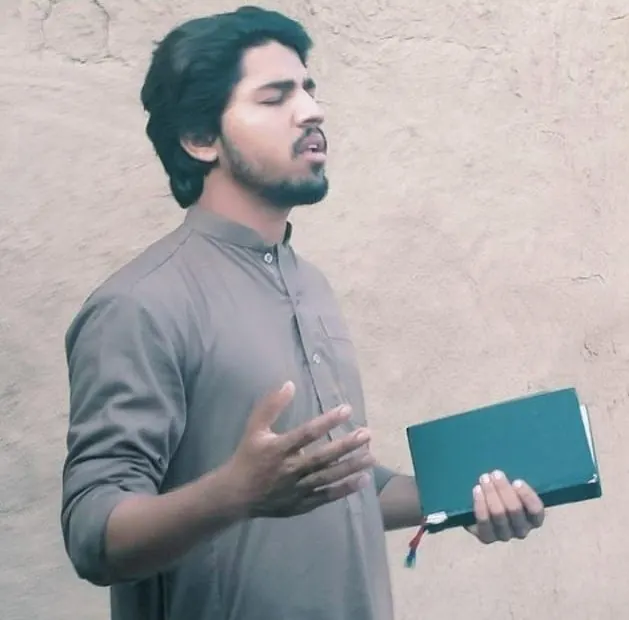

Naveed AmjadFounder & Director
01
Help is Our
Help is Our
Main Goal
Hope Freedom Ministry is dedicated to serving humanity without discrimination. We believe everyone deserves dignity, nourishment, safe shelter, education and access to healthcare.
Help us make a difference →